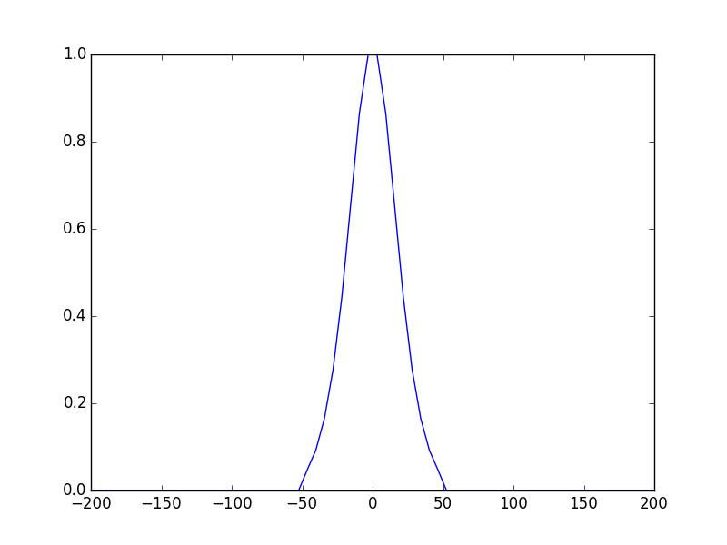
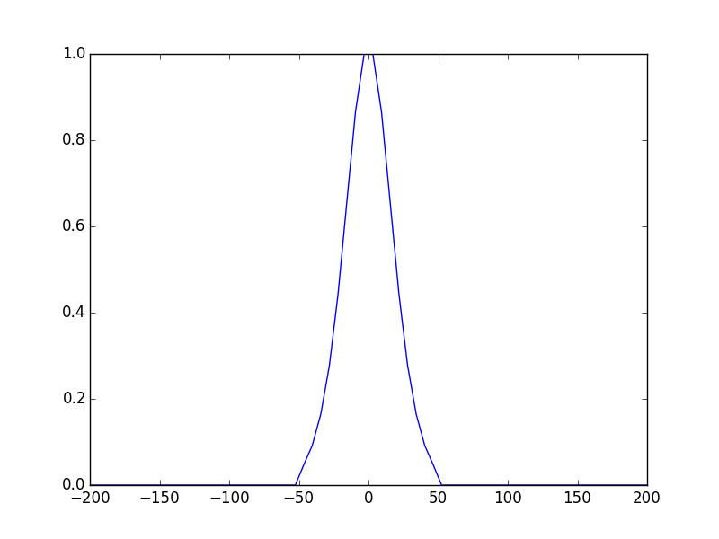

Tutorial 3 - Using apertures and phase masks¶
In the previous tutorial we have seen how to use ABCD matrix to define a linear simple two mirrors cavity, at this point you should be able to define and find the modes of a simple linear resonator, using ABCD matrix, this method is general and powerful and as we will see in next tutorials it can be used to define more complex resonators scheme like a V-shaped , bow-tie cavities. Nevertheless there are some configuration that cannot be defined using ABCD matrix alone, fore example when we want to add an aperture somewhere inside the cavity, or some amplitude or phase modulations (phase mask, diffractive elements, thermal lenses..etc). We can define such systems in OpenCavity by splitting the complex system to subsystems and applying phase mask or aperture, then cascade the subsystems to make the global one. well let’s take some examples you should have a better picture after.
Plano concave cavity using phase mask¶
We stick with the cavity design we see in the first tutorial: the optical resonator can be seen as a periodic sequence, the period or the round-trip is made of M1 the first mirror with radii of curvature R1 equivalent to a lens having a focal length of R1/2, then propagation distance Lc, then the second mirror R2 equivalent to f2=R2/2 and to close the loop a second propagation distance Lc. The mirrors or the equivalent lenses are phase objects, so we can replace them by a phase discretized mask, and use ABCD matrices for propagation, the system can be schematically described as follows:
- phase mask1 -> propagation Lc -> phase mask 2 -> propagation distance Lc

Phase mask 1 is the one of plane mirror so it is just uniform plane equal to one, and phase mask 2 is the transfer function of a thin lens with focal length f2=R2/2. The last two things to know before start coding are:
- OpenCavity allows to apply phase/amplitude masks directly on already built Kernel
- The phase /amplitude masks can be applied only on the first plane of the system. for example if a given system is made of say 3 elements a mirror M1 then distance L then a lens F, if we apply a phase mask to the kernel of the global system, its phase will be applied on the first mirror M1. If you want to apply a mask, say to the last plane just make it the starting plane of the next subsystem.
Knowing this, to define our plano-concave cavity using two subsystems we proceed the following way:
- sub-system1: Plane mirror -> propagation -> apply phase mask 1
- sub-system2: plane mirror -> propagation -> apply phase mask 2
- global-system = cascade(sub-system1, subsystem2)
- solve global-system
It is time to stop talking and start acting, here is the code:
In [1]: import opencavity.modesolver as ms
In [2]: R1=1e13; R2=10*1e3; Lc=8*1e3; npts=100; a=200; # cavity parameters; R1 very large = plane mirror
In [3]: A1=1; B1=Lc; C1=0; D1=1; f=R2/2 #ABCD matrix of propagation anf focal length =R2/2
In [4]: sys1=ms.CavEigenSys();
In [5]: sys2=ms.CavEigenSys();
In [6]: sys1.build_1D_cav_ABCD(a,npts,A1,B1,C1,D1) # system containing just propagation distance
In [7]: sys2.build_1D_cav_ABCD(a,npts,A1,B1,C1,D1) # system containing just propagation distance, we don't apply phase mask of plane mirror it is just '1'
In [8]: T_lens=ms.np.exp((1j*sys2.k/(2*f))*sys2.x1**2); # transfer function (phase mask) of a focusing lens, sys.k is the wave-vector
In [9]: sys2.apply_mask1D(T_lens); # apply a phase mask to the second system = focusing + propagation
Applying 1D Mask...
Mask applied.
In [10]: sys1.cascade_subsystem(sys2)
systems cascaded.
In [11]: sys1.solve_modes()
running the eigenvalues solver...
In [12]: sys1.show_mode(0)
In [13]: sys1.show_mode(0,'phase')
In [14]: sys1.show_mode(2,'intensity')
In [15]: sys1.show_mode(2,'phase')
In [16]: ms.plt.show()


Notes on vectors spacing in OpenCavity¶
When we used OpenCavity to build a matrix Kernel for an optical cavity using the function
build_1D_cav(a, npts, R1, R2, Lc) , where a is the half-size of the calculation zone which contains npts points.
beside building the matrix kernel for the system this function creates two vectors x1,x2 which are the abscissas of the first
and the last planes of the system, as you can see in the code we used this abscissas vector sys.x1 to create a phase mask.
The question is why bothering and create these vectors when it is too easy to generate linearly spaced vector from -a to +a
containing npts elements. The answer is: because these two vectors are not linearly spaced, indeed to build the Matrix-kernel,
OpenCavity transforms the Fresnel propagation integral to an exact some using the Legendre-Gauss quadrature scheme, thus the
vectors contain Legendre-Gauss nodes thereby the resolved modes are also calculated at these points.
inserting an aperture inside the cavity¶
Now we will use the sub-systems cascading function to add an aperture inside the cavity to filter high order modes.

let’s take the same example and take a look at the round trip losses of the first and the second modes.
In [17]: l0,v0=sys1.get_mode1D(0) #l: eigenvalue; v: eigenmode
In [18]: l1,v1=sys1.get_mode1D(1)
In [19]: print(1-ms.np.abs(l0)**2,1-ms.np.abs(l1)**2)
(1.3307139324902906e-06, 3.8373526170309979e-05)
In [20]: ms.np.abs(l0)-ms.np.abs(l1)
Out[20]: 1.8521589967068763e-05
As we can see the two modes are very well confined (have very low losses = 1-abs(l)²) and the differences between them is just negligible.
The idea here is to introduce an aperture with a size that allows to the fundamental mode (but not the second) to pass without losses. Remember every mask or phase amplitude have to be defined at Legendre-Gauss quadrature nodes, which means merely system.x1 (and system.y1 for 2D systems). We take the same code of the first example an we create and add an aperture:
# calculate transfer matrices
In [21]: import opencavity.modesolver as ms
In [22]: R1=1e13; R2=10*1e3; Lc=8*1e3; npts=100; a=200; # cavity parameters; R1 very large = plane mirror
In [23]: A1=1; B1=0; C1=-2/R1; D1=1; #concave mirror M1
In [24]: A2=1; B2=Lc; C2=0; D2=1; #propagation distance Lc
In [25]: A3=1; B3=0; C3=-2/R2; D3=1; #concave mirror M2
In [26]: A4=1; B4=Lc; C4=0; D4=1; #propagation distance Lc
In [27]: M1=ms.np.array([[A1,B1 ],[C1, D1]]); M2=ms.np.array([[A2, B2],[C2, D2]]);
In [28]: M3=ms.np.array([[A3, B3],[C3, D3]]); M4=ms.np.array([[A4, B4],[C4, D4]]);
In [29]: M11=M2.dot(M1); M22=M4.dot(M3); # sub-system 2
In [30]: A11=M11[0,0]; B11=M11[0,1]; C11=M11[1,0]; D11=M11[1,1] # getting the members of subsystem 1 matrix
In [31]: A22=M22[0,0]; B22=M22[0,1]; C22=M22[1,0]; D22=M22[1,1] # getting the members of subsystem 2 matrix
# enter transfer matrices to create a system
In [32]: sys1=ms.CavEigenSys();
In [33]: sys2=ms.CavEigenSys();
In [34]: sys1.build_1D_cav_ABCD(a,npts,A11,B11,C11,D11) #
In [35]: sys2.build_1D_cav_ABCD(a,npts,A22,B22,C22,D22) # to reinitialize the sub-system
# just a small loop to create an aperture (amplitude =0 (no transmission) if radius >50 )
In [36]: aperture= ms.np.ones(npts)
In [37]: for k in range(npts):
....: if ms.np.abs(sys1.x1[k])>50:
....: aperture[k]=0
....:
....:
In [38]: ms.plt.clf()
In [39]: ms.plt.plot(sys1.x1,aperture); # plots the aperture function
In [40]: sys1.apply_mask1D(aperture); # apply the aperture to the subsystem 1
Applying 1D Mask...
Mask applied.
In [41]: sys1.cascade_subsystem(sys2)
systems cascaded.
In [42]: sys1.solve_modes()
running the eigenvalues solver...
In [43]: sys1.show_mode(0,what='intensity')
In [44]: sys1.show_mode(1,what='intensity')
 

{kind=link}

well the fundamental mode still not perturbed, let’s see now the round-trip losses
In [45]: l0,v0=sys1.get_mode1D(0) #l: eigenvalue; v: eigenmode
In [46]: l1,v1=sys1.get_mode1D(1)
In [47]: print(1-ms.np.abs(l0)**2,1-ms.np.abs(l1)**2)
(0.014508132902636639, 0.14202874441174429)
Now the fundamental mode has round-trip loses of 1.4% and the second mode 12.7% this makes possible to select only the the fundamental one for example if one put a gain medium with net gain = 5% inside this cavity only the fundamental mode survives.
A question now: in this example the aperture is inserted on the first mirror, what if we want to change its place to the second
mirror? Well as we said earlier in this tutorial when we use the function apply_mask1D() on a system this apply the mask on
the first plane of the system, if we take a look at the code above the sys2 is the return-trip subsystem so it starts with
the second mirror, all what we have to do is to apply the phase mask to the second subsystem by changing the
line sys1.apply_mask1D(aperture) by sys2.apply_mask1D(aperture). if you try this keep in mind that the mode size on
the second mirror is larger than in the plane one where waist is minimum, so the aperture size have to be change accordingly.
Now you know how to put a phase or amplitude element anywhere into the cavity by using and cascading subsystems. In the tutorial we used a two simple phase and amplitude functions : thin lens transfer function and hard aperture function to find the results of the previous tutorial that we are already familiar with. But any mask can be used for example to introduce aberrations or absorbers into the cavity.
The cleaned code¶
# -*- coding: utf-8 -*-
'''
@author: M.seghilani
'''
import opencavity.modesolver as ms
R1=1e13; R2=10*1e3; Lc=8*1e3; npts=100; a=200; # cavity parameters; R1 very large = plane mirror
A1=1; B1=0; C1=-2/R1; D1=1; #concave mirror M1
A2=1; B2=Lc; C2=0; D2=1; #propagation distance Lc
A3=1; B3=0; C3=-2/R2; D3=1; #concave mirror M2
A4=1; B4=Lc; C4=0; D4=1; #propagation distance Lc
M1=ms.np.array([[A1,B1 ],[C1, D1]]); M2=ms.np.array([[A2, B2],[C2, D2]]);
M3=ms.np.array([[A3, B3],[C3, D3]]); M4=ms.np.array([[A4, B4],[C4, D4]]);
M11=M2.dot(M1); M22=M4.dot(M3); # sub-system 2
A11=M11[0,0]; B11=M11[0,1]; C11=M11[1,0]; D11=M11[1,1] # getting the members of subsystem 1 matrix
A22=M22[0,0]; B22=M22[0,1]; C22=M22[1,0]; D22=M22[1,1] # getting the members of subsystem 2 matrix
# enter transfer matrices to create a system
sys1=ms.CavEigenSys();
sys2=ms.CavEigenSys();
sys1.build_1D_cav_ABCD(a,npts,A11,B11,C11,D11) #
sys2.build_1D_cav_ABCD(a,npts,A22,B22,C22,D22) # to reinitialize the sub-system
# just a small loop to create an aperture (amplitude =0 (no transmission) if radius >50 )
aperture= ms.np.ones(npts)
for k in range(npts):
if ms.np.abs(sys1.x1[k])>50:
aperture[k]=0
ms.plt.clf() # clear figure
ms.plt.plot(sys1.x1,aperture); # plots the aperture function
sys1.apply_mask1D(aperture); # apply the aperture to the subsystem 1 =on the mirror 1
#sys2.apply_mask1D(aperture); # apply the aperture to the subsystem 2 =on the mirror 2
sys1.cascade_subsystem(sys2)
sys1.solve_modes()
sys1.show_mode(0,what='intensity')
sys1.show_mode(1,what='intensity')
l0,v0=sys1.get_mode1D(0) #l: eigenvalue; v: eigenmode
l1,v1=sys1.get_mode1D(1)
print(1-ms.np.abs(l0)**2,1-ms.np.abs(l1)**2)
ms.plt.show()